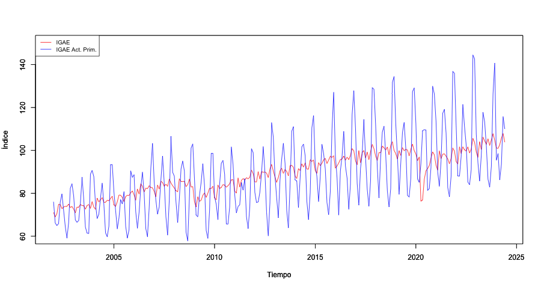

Análisis de Series de Tiempo
Facultad de Economía, Universidad Nacional Autónoma de México Departamento de Economía, Tecnológico de Monterrey, Campus Santa Fe
Benjamín Oliva · Omar Alfaro Rivera · Emiliano Pérez Caullieres · Luis Gerardo Ruíz
Versión: Julio 2026

Presentación
Estas notas corresponden al curso de Análisis de Series de Tiempo de la Facultad de Economía de la Universidad Nacional Autónoma de México (UNAM) y al curso de Econometría II del Tecnológico de Monterrey, Campus Santa Fe. Están orientadas a estudiantes de licenciatura con conocimientos previos de econometría y probabilidad, y tienen como objetivo ofrecer una introducción rigurosa pero accesible a los principales modelos de series de tiempo, tanto desde la perspectiva teórica y de matemática formal como computacional.
El material cubre los siguientes temas:
- Ecuaciones en diferencia y su relación con los procesos estocásticos.
- Procesos estacionarios y modelos univariados (AR, MA, ARMA, ARIMA).
- Pruebas de raíz unitaria y procesos no estacionarios.
- Modelos multivariados: VAR, cointegración, VEC y ARDL.
- Modelos de volatilidad: ARCH y GARCH univariados y multivariados.
- Datos en panel y modelos no lineales de cambio de régimen.
Todos los ejemplos se implementan en R utilizando paquetes especializados (forecast, urca, vars, rugarch, plm, entre otros). El código está disponible en el repositorio de GitHub junto con las bases de datos empleadas.
Este es un trabajo en proceso de mejora continua. Para comentarios o correcciones escribir a: benjov@ciencias.unam.mx o omarxalpha@gmail.com.
| Recurso | Enlace |
|---|---|
| Sitio web | https://benjov.github.io/Series-Tiempo/ |
| Repositorio (código y datos) | https://github.com/benjov/Series-Tiempo |
| Versión PDF | https://github.com/benjov/Series-Tiempo/blob/main/docs/Notas-Series-Tiempo.pdf |